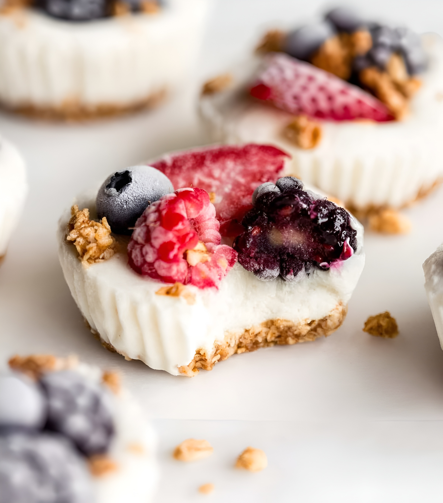

Frozen Yogurt Muffins
Los Frozen Yogurt Muffins son muffins suaves y esponjosos hechos con yogur congelado, que les da una textura húmeda y ligera. Suelen llevar frutas, chips de chocolate o frutos secos, y son una opción más saludable y refrescante que los muffins tradicionales, perfectos para desayunos o meriendas.
Ingredientes
Preparación
- Forra un molde para muffins con 6 capacillos de papel o silicona.
- Mezcla la mantequilla de cacahuete, la miel y la granola en un bol pequeño.
- Reparte la mezcla de granola en cada cápsula para cupcakes.
- Presiona cada una con una cuchara o el fondo de una taza medidora.
- Llene los vasos con yogur hasta el borde del molde (aproximadamente 2-3 cucharadas de yogur por cada molde).
- Cubra con fruta en rodajas, nueces picadas y un chorrito de miel (opcional).
- Congelar durante unos 30 minutos a 1 hora.
- Dejar descongelar durante unos 2-3 minutos, luego retirar con cuidado cada vasito de yogur del molde para muffins.
Tips
No sobremezcles la masa; solo integrá los ingredientes. Así los muffins quedan tiernos y aireados, evitando que se apelmacen.